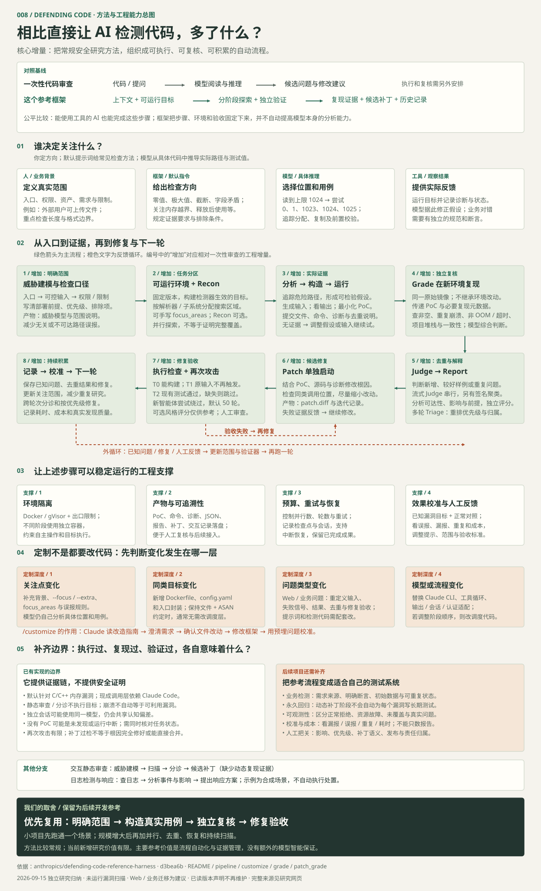

提出值得测试的假设
读代码、追踪输入、设计异常数据、解释结果、修改代码。
大模型读代码、提出假设、构造输入。执行工具运行实验，独立验证者重新复现，最后再生成并检查修复。这是它组织安全研究的基本方式。
读代码、追踪输入、设计异常数据、解释结果、修改代码。
分配任务、创建环境、传递产物、保存记录、控制重试。
运行目标、检查内存错误、构建补丁、执行现有测试。
现成调用层使用 Claude Code，自动流水线默认研究 C/C++ 内存漏洞。方法可以跨模型、跨场景复用，但要适配工具调用与判定标准。它生成的 PoC 是“触发问题的输入”，未必是已经进入 CI 的长期测试用例。
定位依据 ↗检查方法较常规；主要价值在于把源码分析、真实用例、独立复核、去重和修复验收自动串联，并留下可复核证据。当前保留为后续开发参考，按需要复用，不必照搬整套框架。
分工 → 执行闭环 → 工程支撑 → 定制 → 边界。
概念总图包含可选步骤与独立命令。

先理解输入能到哪里，再寻找“不该发生的状态”。
点击步骤，查看每一阶段的输入、动作与产物。
关注边界长度、截断结构、分配与复制之间的不一致；优先寻找有内存破坏证据的问题。正常错误处理、单纯耗尽内存、测试脚本自身的问题，不能直接作为高质量发现。
输入被拒绝，就回看前置检查；只触发断言，就继续分析邻近路径；出现有效证据，再缩小输入、重复运行。这不是把整个仓库一次塞进模型，也没有保证覆盖全部路径。
设想一个解析器：每项数据占 4 字节，却用只能保存 0–255 的长度值记录分配大小。拖动数量，看“实际需要”与“记录的长度”是否分离。真实程序还需确认类型转换、检查逻辑和可达路径。
这里用 8 位长度放大现象。它不是生产级补丁建议，也未执行 C/C++ 程序。
生成真实格式的文件 → 调用目标程序 → 获取检测器输出 → 确认错误位于项目代码 → 在新环境独立复现。
程序正确处理异常输入。继续寻找其他路径。
先排查实验环境，不能据此认定内存破坏漏洞。
保存输入和堆栈，交给独立验证者复现。
问题证据更强；真实攻击影响仍需单独分析。
避免“只在发现者修改过的程序里成立”。
环境独立，也不意味着模型结论永远正确。
读取源码、尝试输入、运行程序。
运行 PoC，检查真实输出。
Find 要求提交前尽量达到 3/3；Grade 对部分可解释波动允许降分通过。综合结论由模型读取证据后生成，程序解析其判断。
流式模式下，模型串行对比已报告问题，判断新增、替换为更好样例或跳过重复；另有按 ASAN 签名聚类的命令。
结合入口、攻击者控制程度和限制写报告，再独立评分证据。崩溃不自动等于远程代码执行。
交互式分诊跨轮次合并同根因发现，根据环境前提调整严重性，标注组件归属。
| 层级 | 谁来判断 | 实际检查 | 仍然不能证明什么 |
|---|---|---|---|
| T0 · 构建 | 程序检查 | 补丁可应用，构建退出成功 | 业务逻辑一定正确 |
| T1 · 原输入 | 程序检查 | 退出码 0，输出没有 ASAN 标记 | 其他输入也不会出错 |
| T2 · 回归 | 程序检查 | 现有测试通过；未配置则跳过 | 未覆盖的行为没有回归 |
| 再次攻击 | 模型探索 | 新智能体尝试变体，默认 50 轮 | 根因已彻底消失 |
| T3 · 风格 | 模型建议 | 可选评分，不影响验收通过 | 维护者一定接受补丁 |
所读版本的再次攻击流程在 run_find 没有返回崩溃产物时，将其记为 clean，并未在这里单独检查智能体错误状态。复核时还应查看执行记录，区分“搜索完成且未发现问题”和“任务中断、没有产物”。这也是不能把再次攻击通过当作安全证明的原因。
动态补丁阶段运行现有测试，不自动为每个漏洞添加永久回归测试。静态 /patch 在存在合适测试结构时会尝试生成测试，但仍需执行验证。
只想让它更懂你的项目，与让它检测一类新问题，
所需的改动量完全不同。
已有静态审查就够用，只需补充攻击入口、权限边界、重点类别与误报排除理由。
/vuln-scan ./src --extra .claude/scan-extras.txt
/triage ./VULN-FINDINGS.json --fp-rules .claude/fp-rules.txt保持“文件输入 + ASAN 检测”的约定，提供构建环境、配置和薄入口封装，通常无需修改调度代码。
重新定义输入形式、失败信号、复现步骤、去重依据和修复标准；提示词、结果结构与验收代码要一起调整。
适配模型调用、文件读写、命令执行、输出解析、会话恢复、凭据与网络配置。
“出现什么可观察的结果，
才算真的发现了我要找的问题？”
这个判定依据称为 oracle。它可以是内存检测报告，也可以是来自业务规范的断言。先把它定义清楚，模型才有可靠的实验反馈。
它是一份指导代码智能体修改框架的技能指令。运行 /customize 并不意味着所有语言和漏洞类别已经内置支持。
查看定制技能与文件改动映射 ↗前一个场景沿用原框架约定。
后两个是迁移建议，尚未实现或验证。
字段来自当前 TargetConfig。仓库地址与提交需替换为真实值，构建和测试命令需匹配目标；这份骨架未经运行，不能单独完成接入。
image_tag: vuln-pipeline-my-parser:latest
github_url: https://github.com/OWNER/REPO
commit: REPLACE_WITH_FULL_COMMIT_SHA
source_root: /work
binary_path: /work/entry
# 补丁应用后如何重新编译；真正项目按自身构建系统填写
build_command: gcc -O1 -g -fsanitize=address -fno-omit-frame-pointer -o /work/entry /work/entry.c
# 需要真实存在的测试；缺失时 T2 被跳过
test_command: cd /work && make check
focus_areas:
- "解析长度字段：分配大小与后续写入是否一致"
known_bugs: []
attack_surface: |
生产入口接收用户上传文件并调用解析函数。
请补充调用者权限、格式限制和部署约束。focus_areas 引导搜索起点；known_bugs 提醒已有问题，最好记录函数和根因特征；attack_surface 帮助报告解释真实可达性。它们都是上下文，不是自动执行的安全断言。
如果探测器看不见错误，增加智能体数量
只会放大没有证据的搜索。
固定版本、依赖与初始数据。至少准备一个已知错误和一个正常输入，确认检测器能区分它们。新领域可制作包含少量预埋问题的 canary 校准目标，答案不交给发现者。
输入如何进入生产路径？什么权限可到达？哪个断言失败才算问题？业务需求需有独立依据，不能让模型仅从当前代码推导正确行为。
查看实际输入、命令、检测输出和新环境复现。运行失败、未覆盖与确认无问题要分别记录。只有报告文字、没有执行证据，还不能完成动态验证。
统计已知问题是否找到、正常输入是否误报、重复发现数量、补丁回归、耗时与成本。调整搜索区域和验证器后再放大规模。
下面是已有目标的用法参考，不会在本网页执行。需提前准备支持 Docker / gVisor 的 Linux 环境、Python 3.11+ 和 Claude 访问凭据；在 Windows 上应另行准备兼容环境。命令中的模型名称和结果路径需自行替换。
# 一次性安装与沙箱准备：在上游仓库内
python3 -m venv .venv
.venv/bin/pip install -e .
./scripts/setup_sandbox.sh
# 已有 drlibs 目标的一轮发现、验证与流式报告
bin/vp-sandboxed run drlibs --model MODEL_ID --runs 1 --stream --auto-focus
# 单独生成并验证补丁
bin/vp-sandboxed patch results/drlibs/TIMESTAMP/ --model MODEL_ID配置 Claude 认证后再执行。新目标完成适配后，用其目录名称替换 drlibs。
布局会随单轮或多轮模式变化；多轮通常带 run_NNN/ 子目录。
这个框架对自动业务测试也有启发，但迁移时需要新的规范、断言和环境恢复机制。当前页面完成的是原理分析与教学展示。
{kind=link}